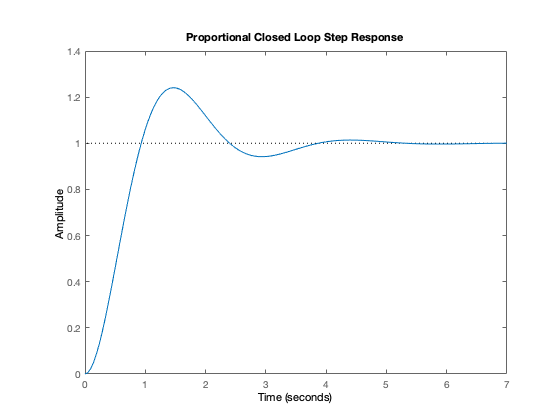
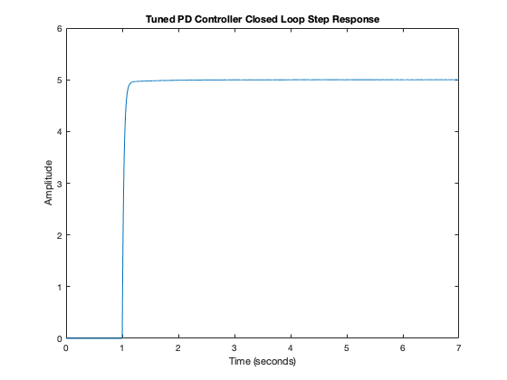

clc
s = tf('s');
Kc = 20;
Kdc = 1;
tr = 765.817/1000;
OS = (6.205-5)/5;
wn = 1.8/tr;
syms z
eqn = OS==exp((-pi*z)/sqrt(1-z^2));
zeta = vpasolve(eqn,z);
zeta = double(zeta);
num = Kdc*wn^2;
den = [1 2*zeta*wn wn^2];
sysClosed = tf(num,den);
figure(1)
step(sysClosed);
title("Proportional Closed Loop Step Response")
sysOpen = sysClosed/(Kc*(1-sysClosed))
[num, den] = tfdata(sysOpen);
figure(2)
plot(out.pdOutput);
ylabel("Amplitude");
title("Tuned PD Controller Closed Loop Step Response")
sysOpen =
5.525 s^2 + 10.72 s + 30.52
----------------------------------------
20 s^4 + 77.58 s^3 + 185.7 s^2 + 214.3 s
Continuous-time transfer function.
 